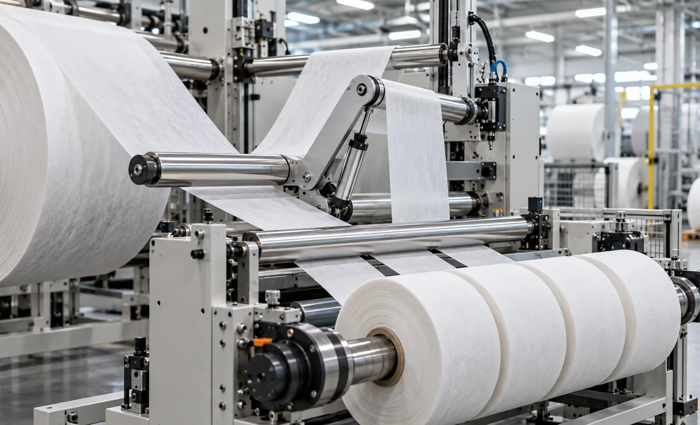
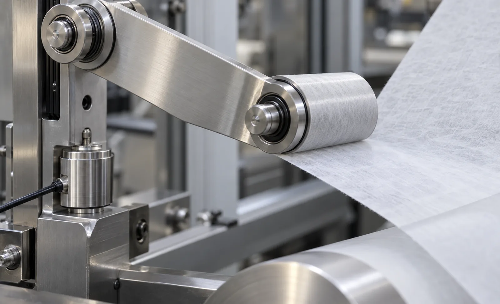

Published September 27, 2026 | By HDPTH Technical Editorial Team

Elastic and stretch materials have moved from niche to mainstream in hygiene, medical and apparel converting: waistband laminates, ear loops, stretch side panels, elastic composite films. Buyers who specify these materials on a standard film slitter usually discover the gap at commissioning — rolls arrive banded, telescoped or with elongation that varies across the width. The differences are physics, not preference.
Why elastic webs break the usual tension rules
Conventional films and papers behave like stiff membranes: tension is roughly proportional to strain, but the strain itself is tiny, so web length is effectively constant. Elastic webs are different. A web that stretches 30 percent under working tension is 30 percent longer under load than at rest — and it keeps creeping under load even when the line stops. Three consequences follow:
- Tension lives at gram-force levels. Working tension on stretch hygiene laminates is often an order of magnitude below films of the same basis weight. Load cells and drives sized for film will never resolve it.
- Length is a control variable. Because web length depends on tension, the standard algorithms for taper tension, roll build and inertia compensation assume a geometry that no longer holds. The control system needs strain-aware profiles.
- Standstill is a loaded state. A stopped elastic web under tension keeps relaxing and dragging, so thread-up, splice and stop sequences must drop tension fast or hold the web mechanically.
Tension sensing and control options for stretch webs
The buyer’s choice is between load cells and dancer systems, and for elastic webs the dancer usually wins. A dancer stores web, so an instantaneous change in stretch becomes a small arm movement rather than a force spike, and it keeps control authority during accel, decel and thread-up. Load cells still have a place — for logging and closed-loop verification — but they must be low-range units with resolution matched to gram-force signals, mounted away from machine vibration.
What separates a converted-elastic machine from a converted film machine in the drive cabinet:
- Hybrid control loops blending dancer position, load-cell signal and calculated roll diameter, rather than trusting a single sensor.
- Fast tension release on stop and splice — typically web clamp or active unwind release, because a relaxing web pulls tension back through the path.
- Strain-aware taper on the rewind, programmed from the material’s stretch curve rather than a generic percentage.
- Precise low-speed behavior — elastic webs reveal drive cogging and backlash at thread-up speed that films hide.
Our guide on tension zone architecture covers zone boundaries in general; on elastic webs every setpoint sits far lower and reacts faster.
Winding elastic rolls without banding and telescope
On the rewind, stored elastic recovery is the enemy: inner layers keep trying to contract while outer layers press on them, so a wound roll is a loaded spring. Good practice on converted-elastic rewinders:
- Nip-free or light-nip center winding. A hard nip that flattens soft elastic layers creates density bands that persist after slitting into product.
- Fast-decaying torque taper so the first wraps near the core set the roll structure without being crushed by later layers.
- Core and chuck discipline. Weak cores collapse under recovery loads; core chucks must grip without distorting the core wall.
- Roll hardness specification. State a target hardness range and measure it — see our roll hardness testing guide. On elastic webs, hardness spread across the width usually traces back to tension spread, not winding settings alone.
| Aspect | Conventional film / paper | Elastic / stretch web |
|---|---|---|
| Working tension | Percent-of-basis-weight rules apply, moderate ranges | Gram-force ranges far below film norms; strain-defined |
| Primary tension sensor | Load cells work well in most zones | Dancer preferred; low-range load cells for verification |
| Control assumption | Web length constant with tension | Web length varies with tension; strain-aware profiles |
| Rewind build | Nip or center wind, standard taper | Nip-free or light-nip center wind, fast torque decay |

Knives and edge quality on stretch structures
Edge quality on elastic webs is a functional property, not a cosmetic one. A fuzzy or beaded edge concentrates stress, and the finished product — an ear loop, a waistband, a stretch side panel — fails at exactly that edge. Shear knives with correct overlap and side pressure, kept sharp and set repeatably, outperform razors on most laminated elastics because they cut both plies cleanly without dragging the elastic component. Razor slitting still suits very light, open spunbond layers where wrap and a supported slitting plane are controlled. Whatever the method, the specification should require a knife system with micron-level, repeatable positioning — see our knife clearance and overlap guide — and a trial on your material before the order is placed. Elongation bands across the roll usually trace to knife drag as much as to tension error.
What to put in the inquiry
A complete elastic-web inquiry contains the material’s personality, not just its width. Include: basis weight or thickness; stretch percentage and recovery behaviour; whether the elasticity is rubber-based, spandex-containing or purely mechanical stretch; parent roll and finished roll dimensions; target speed; the tension window the material tolerates; hygiene or medical handling requirements; and finished roll hardness expectations. Then ask for a material trial at production speed — the fastest, cheapest insurance in this segment. Suppliers who convert these materials daily will ask for samples without prompting.
Converting elastic and stretch materials?
Send HDPTH your material type, stretch percentage, widths and target tension window. We configure tension control, winding and knife systems around the web you actually run — and prove it on your samples.
Submit Your Project InquiryFrequently asked questions
Why does elastic web need different tension control than film or paper?
Elastic and stretch webs hold web tension by strain rather than by stiffness, so the control system is effectively managing elongation. The web keeps stretching under load even at standstill, tension ranges sit far below conventional films, and the same web length changes with tension, which breaks the assumptions built into standard diameter-based taper and inertia compensation. Buyers need machines sized and programmed for low absolute tension with strain-based logic.
Is a dancer system better than load cells for stretch materials?
For most elastic and stretch webs a dancer is the first choice. The dancer stores web, absorbs elongation changes and speed steps instantly, and does not depend on a tension signal that is distorted by the web stretching. Where load cells are used they must be low-range, high-resolution units matched to gram-force levels, and the control loop should blend the signal with dancer position and roll diameter data rather than trusting one input alone.
What happens on the rewind side when winding soft elastic rolls?
Rewind torque must fall quickly as roll diameter grows so inner layers are not crushed or telescoped, and many elastic applications wind with a nip-free center wind and low taper profiles. Core choice matters because a weak core collapses under stored elastic recovery. Roll hardness should be checked across the width and down the roll, and the specification should state a target hardness range rather than leaving winding feel to the operator.
Which slitting method works best on stretch nonwovens and elastic composites?
Sharp shear knives with correct overlap and side pressure give the cleanest edge on most stretch nonwovens and laminated elastics, because a dull or mis-set edge causes fuzz, beads and elongation bands that show up in the finished product. Razor slitting suits very light, open structures where wrap and supported slitting are controlled. Whatever the method, the buyer should test on real material at production speed before ordering, and confirm the knife holder design allows repeatable micron-level setting.
What material data should be in the inquiry for an elastic web slitter rewinder?
Provide base weight or thickness, elastic modulus or stretch percentage and recovery behaviour, whether the web is active (rubber-based or spandex-containing) or mechanically stretched, roll width and parent roll diameter, finished roll width range and diameter, target line speed, and the tension range the material tolerates in gram-force per centimetre of width. Supply samples for trial, and state hygiene or cleanroom requirements if the product is medical or hygiene related.